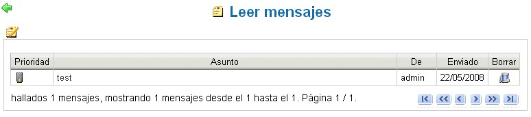

Recibir un mensaje del sistema |
Para leer el propio mensaje es suficiente con acceder a
la página principal de gestión de mensajes: Datos
Personales --> Mensajes.
Está disponible mediante un enlace presente en la
página inicial del sistema "Leer mensajes".
Como primera cosa, aparece el mensaje con referencia al asunto y al
remitente.
El mensaje recibdo se visualiza en una lista clasificada mediante datos
de recepción; los aún no leídos son
visualizados en gris.
También se indica la Prioridad (icono en la primera columna
de la tabla) y un enlace para la cancelación
rápida del mensaje.
Haciendo click en el elemento del directorio, se visualiza el contenido
del mensaje.
